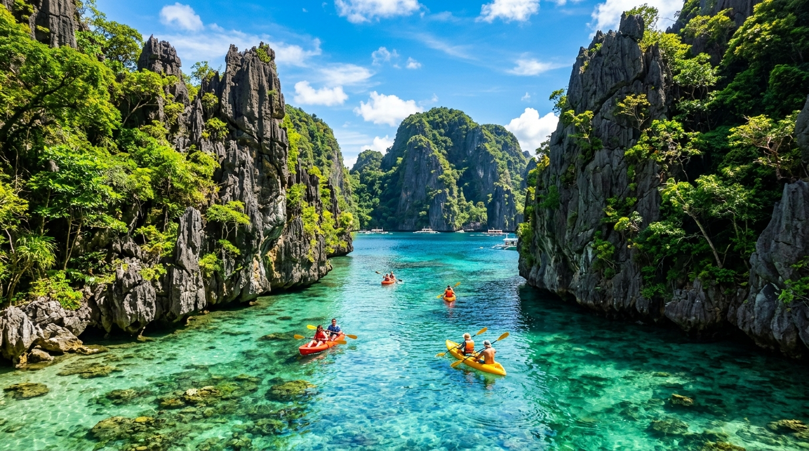

From "Bacuit" to World-Renowned Eco-Paradise
Nestled on the northernmost tip of mainland Palawan, El Nido was originally known as Bacuit. In 1954, it was officially renamed El Nido, derived from the Spanish word for "The Nest," honoring the edible bird nests (nido) harvested by daring local tribes from towering sheer limestone cliffs.
Comprising 45 enchanting islands and islets within Bacuit Bay, El Nido was declared a managed resource protected area under the National Integrated Protected Areas System (NIPAP). Today, its headquarters at the NIPAP Building in Brgy. Buena Suerte anchors sustainable development, balancing ecological preservation with thriving, community-led tourism.

45
Islands & Islets250+
Coral Species100%
Protected StatusOur Mission
To deliver responsible, transformative, and safe tourism experiences while fiercely protecting the marine and terrestrial biodiversity of El Nido, ensuring fair socio-economic benefits for local boat operators, guides, and indigenous communities.
Our Vision
To stand as Southeast Asia’s benchmark model for sustainable eco-tourism, where pristine turquoise lagoons, ancient limestone formations, and wildlife thrive harmoniously alongside modern, digitally-empowered travelers.
Core Values
- Stewardship: Strict zero-plastic & reef safety policies.
- Integrity: Regulated pricing and accredited operations.
- Community: Direct empowerment of Palawan locals.
- Excellence: World-class hospitality and tourist security.
Why El Nido Stands Out Globally
Unlike generic beach resorts, El Nido offers an immersive natural amphitheater of dramatic geological wonders formed over 250 million years ago.
Discover Our Curated PackagesExclusive Karst Lagoons
The enclosed natural cathedral of Big Lagoon and Secret Lagoon are accessible only by kayak or tidal cavern swim.
Rich Marine Biodiversity
Over 800 fish species, 5 species of endangered marine turtles, and rare manta rays in Shimizu and Bacuit Bay.
Community-Centered Guides
Trained local boat captains and DOT-licensed tour specialists providing authentic island cuisine and safety.
Proactive Carrying Capacity
Strict daily visitor caps on fragile lagoons to prevent over-tourism and protect marine corals for generations.
Target Market & Visitor Segments
Designing digital tourism tools for diverse traveler demographics.
Eco-Adventure Seekers
Tourists passionate about snorkeling, sea kayaking, cliff trekking, and sustainable nature immersion.
Content Creators & Couples
Honeymooners and photographers drawn to Nacpan Beach golden hours and turquoise lagoon aesthetics.
Family & Group Vacations
Value-seeking travel groups booking the complete 4D3N ₱8,500 package with transfers and accommodations.
International Backpackers
Global travelers arriving via Puerto Princesa or Coron on multi-week Philippine tropical discovery.